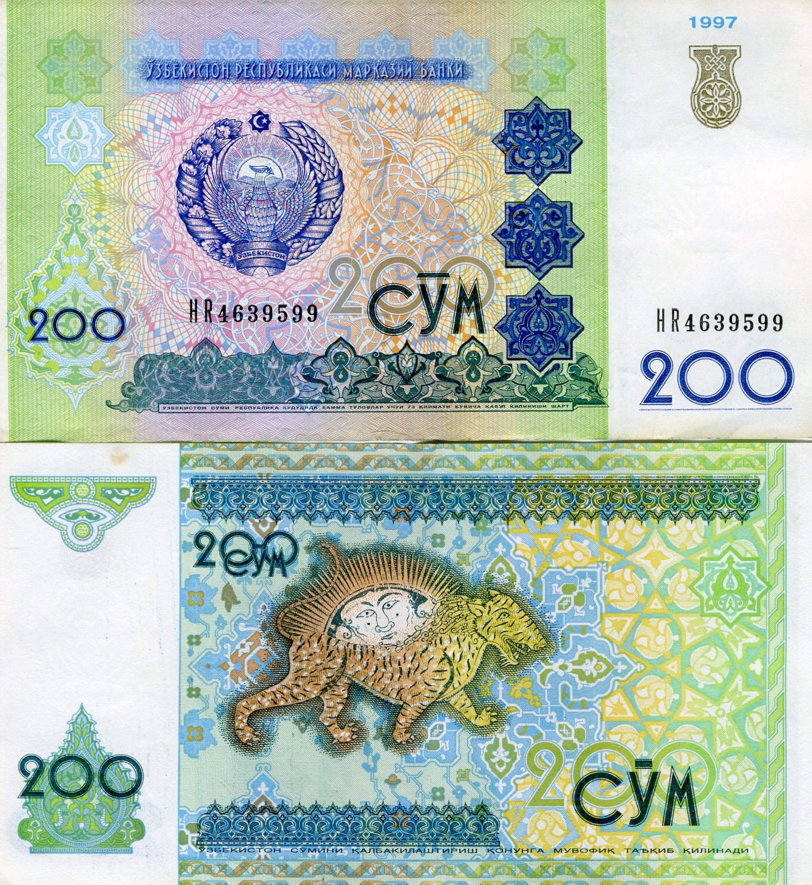

Oʻzbekistonda raqamli toʻlovlar: Uzcard, Humo, Click va Payme qanday ishlaydi
Oʻzbekistonning naqdsiz toʻlov tizimi ikki milliy karta tizimi — Uzcard (2004-yilda yoʻlga qoʻyilgan) va Humo (Markaziy bank tomonidan 2019-yilda ishga tushirilgan) hamda ularga bogʻlanadigan mobil ilovalar, jumladan Click va Payme ustiga qurilgan. Kartalar ilovaga bogʻlanadi; foydalanuvchilar karta raqami orqali oʻzaro (P2P) pul oʻtkazadi, QR orqali toʻlaydi, kommunal va boshqa toʻlovlarni amalga oshiradi. 2021-yildan Uzcard va Humo oʻzaro muvofiqlashtirilgan. KPMG tahliliga koʻra, naqdsiz karta toʻlovlari 2025-yilda YaIMning ~72% ini tashkil etgan. Rasmiy va nufuzli manbalar asosida.

Oʻzbekistonda naqdsiz toʻlovlar soʻnggi yillarda keng tarqaldi: karta orqali toʻlash, telefon ilovasida pul oʻtkazish va QR-kod bilan hisob-kitob qilish kundalik hayotning bir qismiga aylandi. Quyida bu tizim — Uzcard, Humo milliy karta tizimlari va Click, Payme kabi ilovalar faqat faktlar asosida tushuntiriladi.
Uzcard — milliy karta tizimi
Uzcard — Oʻzbekistonning milliy karta toʻlov tizimi, 2004-yilda yoʻlga qoʻyilgan va mamlakatdagi eng yirik ichki karta tizimi hisoblanadi. U Markaziy bank nazorati ostidagi yagona protsessing markazi orqali ishlaydi. Uzcard kartalari ichki bankomatlar, savdo nuqtalaridagi toʻlov terminallari (POS) va onlayn toʻlovlar uchun ishlatiladi.
Humo — ikkinchi milliy tizim
Humo — Markaziy bank tashabbusi bilan yaratilgan ikkinchi milliy toʻlov tizimi. Uning logotipi 2019-yil fevralda taqdim etilgan va tizim 2019-yil davomida ishga tushirilgan; u Milliy banklararo protsessing markazi tomonidan boshqariladi. Humo Uzcard bilan raqobat va banklararo muvofiqlashtirishni taʼminlash maqsadida tashkil etilgan; xalqaro operatsiyalar uchun Visa, Mastercard va UnionPay bilan hamkorlik oʻrnatgan.

Click va Payme — mobil toʻlov ilovalari
Click va Payme — mamlakatdagi eng koʻp ishlatiladigan mobil toʻlov ilovalari. Payme isteʼmolchi ilovasi 2016-yil 25-martda ishga tushirilgan; Click esa 2010-yillar boshida bozorda karta raqami orqali oʻzaro (P2P) oʻtkazmalarni, jumladan internet zaif hududlarda ishlaydigan USSD xizmatini ommalashtirgan tizimlardan biri boʻlgan. Egalik tuzilmasi quyidagicha: Payme Gruziyaning TBC Bank guruhiga tegishli (2019-yilda 51%, 2023-yilda qolgan 49% sotib olingan), Click esa Uzum holdingi bilan birlashgan. Ikkala ilova ham karta raqami boʻyicha pul oʻtkazish, QR orqali toʻlash, mobil balansni toʻldirish hamda kommunal, soliq, jarima va boshqa toʻlovlarni amalga oshirish imkonini beradi.
Tizim qanday ishlaydi
Foydalanuvchi Uzcard yoki Humo bank kartasini ilovaga (Click yoki Payme) bogʻlaydi. Soʻng karta raqamini kiritib oʻzaro pul oʻtkazadi, savdogarga QR-kod orqali toʻlaydi, telefon balansini toʻldiradi, kommunal va boshqa toʻlovlarni amalga oshiradi hamda bankomatlardan naqd pul yechib oladi. Ilovalar Uzcard va Humo kartalari oʻrtasida oʻtkazmalarni qoʻllab-quvvatlaydi.
Uzcard va Humoning oʻzaro muvofiqligi
Dastlab Uzcard va Humo kartalari alohida tarmoqlarda ishlar edi. Ularning oʻzaro muvofiqlashtirish jarayoni bosqichma-bosqich amalga oshirildi: 2021-yil dekabrda koʻpchilik POS terminallari ikkala kartani ham qabul qila boshladi, 2023-yil oʻrtalariga kelib esa bankomatlarning aksariyati har ikki tizimga xizmat koʻrsatdi. Hozir amalda har qanday terminal yoki bankomat ikkala karta tizimini ham qabul qiladi.
Chet elda va xalqaro kontekst
Oddiy Uzcard va Humo kartalari yakka holda chet elda ishlamaydi — ular ichki tizimlar. Yechim — qoʻsh brendli (co-badged) kartalar: Uzcard yoki Humo Mastercard, Visa yoki UnionPay bilan birga chiqariladi; ichki operatsiyalar milliy tarmoqda, chet eldagilari esa xalqaro tarmoqda bajariladi.
Raqamlar bilan
Markaziy bank uchun tayyorlangan KPMG tahliliga koʻra, naqdsiz karta toʻlovlari 2025-yilda nominal YaIMning taxminan 72% iga yetgan (2021-yildagi ~25% dan). Karta tranzaksiyalari hajmi 2021-yildagi 297 trln soʻmdan 2025-yilda 1 493 trln soʻmga oshgan. Markaziy bank maʼlumotiga koʻra, 2026-yil 1-yanvar holatiga muomalada 68,27 million bank kartasi boʻlgan.
Diaspora uchun ahamiyati
Chet eldagi oʻzbeklar yaqinlariga yuborilgan pulni ularning Uzcard yoki Humo kartasiga olishlari mumkin; ilovalar orqali Oʻzbekistondagi oila aʼzolarining kommunal va boshqa toʻlovlarini masofadan amalga oshirish ham imkoniyat darajasida mavjud. Aniq tariflar, limitlar va xizmatlar tizim operatorlari hamda banklarning rasmiy maʼlumotlarida eʼlon qilinadi.

Manbalar
- Kun.uz — Central Bank presents the logo of new national payment system Humo (Feb 2019)
- Humocard.uz — About the Humo payment system / National Interbank Processing Centre
- Kun.uz — TBC Bank acquires Payme (2019 / full acquisition 2023)
- UzDaily — Uzum and Click announce merger
- UzDaily — KPMG study for the Central Bank: cashless payments ~72% of GDP in 2025
- Kun.uz — Uzcard and Humo ATM/POS interoperability (2021–2023)